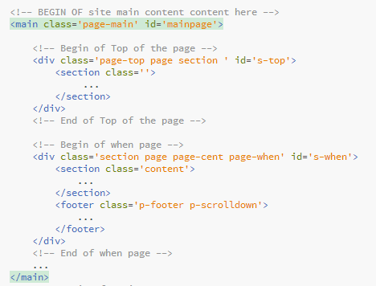
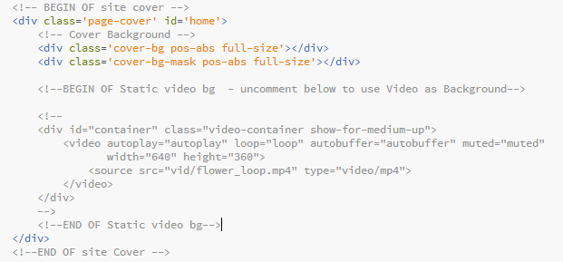

Created: 29/10/2014
By: MiVFX / HighHay
Email: miradontsoa@yahoo.fr
Twitter: twitter.com/miradontsoa
Themeforest: themeforest.net/user/mivfx
Website: highhay.com
Thank you for purchasing my theme. If you have any questions that are beyond the scope of this help file, please feel free to email via my user page contact form here. Thanks so much!
This theme is a landing page template with a responsive layout. All of the information within the main content area is nested within a main tag with an id of "mainpage".
The general structure of each page subsection is the same throughout the template. Here is the general structure.
The page cover (background , background video and background-mask) content is within a div with a class "page-cover".
If you would like to enable background video, add the following lines inside the div with a class "page-cover", and below the div with class "cover-bg-mask" (The layout "index_layout_videostatic" already uses this feature) :
<div id="container" class="video-container show-for-medium-up">
<video autoplay="autoplay" loop="loop" autobuffer="autobuffer" muted="muted"
width="640" height="360">
<source src="vid/flower_loop.mp4" type="video/mp4">
</video>
</div>
Video should be in webm format (type="video/webm) or mp4 format (type="video/mp4) according to HTML5 rules.
To change the social networks link, find the div with a class "socialnet" and change the href to your social network links. If you would like to add more social networks links, add the following line inside this div :
<a href='#'><i class="ion ion-social-socialnetworkname"></i></a>
This template uses Ion Icons Webfont for all of its icons to be Responsive. Check out their Website for more documentation.
The two main CSS files in which this theme is build upon are : "main.css" and "main_responsive.css". The first one contains all of the specific stylings for the page (block structure, fonts, colors, positions, initializations). This file is separated into sections using:
/* 0. Base Style */
some code
/* 1. Menu at top layer */
some code
etc.
The second file (main_responsive.css) handles the responsiveness of the layout accross different sreens size. You can copy all of its content to the main file (main.css) to increase page loading performance.
A Third file "main_alt_style.css" is used for an easy customization of the theme. There are 4 predefined style in this template. To apply one of them, first, add a class 'styleX' to the body tag such as (for style2) :
<body class="style2" ...>
Then you can edit the main_alt_style.css to change colors :
/* First color */
.style2 .mm a,
.style2 .page-top .p-soon>div h2,
.style2 .page-top .p-nav>div h2,
.style2 .page-top .p-nav>div h3,
.style2 .page-cent .p-title h3,
.style2 .page-when .clock .digit,
.style2 .page .form input,
.style2 .page .form button,
.style2 .page .form textarea,
.style2 .page p,
.style2 .page-contact .onecolumn-1 .page-grid .desc,
.style2 .page-contact .socialnet a,
.style2 .page-contact ul.desc ,
.style2 .text-maincolor{
color: #FFF; //Change color
}
.style2 #fp-nav span, .fp-slidesNav span{
border-color: #fff; //Change color
}
etc.
To change background image, point the "background" value to your image location
.style2 .page-cover .cover-bg{
background: url('IMAGE LOCATION HERE');
background-repeat: no-repeat;
background-size: cover;
background-attachment: fixed;
background-position: center;
}
You can also change the bacground cover mask color:
.style2 .page-cover .cover-bg-mask{
background: rgba(51, 29, 47, 0.4);
}
You are not limited to the 4 predefined styles. Feel free to add your owns.
You can even override an existing style by adding another class to the body tag and customizing the CSS of this class.
Also, you can copy all of its content to the main CSS file (main.css) to increase page loading performance.
Other vendors CSS files are used for browser normalization (normalize.css), webfont loading (ionicons.min.css, /fonts/opensans/stylesheet.css), grid framework (foundation.min.css, /js/vendor/jquery.fullPage.css ) and page loading (pageloader.css).
Please do not edit these files. Just override their rules (in "main.css" for example) for theme customization.
Javascript makes this theme more dynamic and animated, even thought some animations use CSS3.
This theme imports these great vendor specific Javascript Plugin (Thanx to their authors) :
Also, based on these plugins, it uses the following javascripts main files :
Their are ready to use and i do not suggest to modify them but you can always tweak them.
To edit the launching date of the countdown clock, find the div with a class "site-config" and change the "data-date" for launching date (Format: MM/DD/YYYY HH:MN:SC) and "data-date-timezone" for time zone. Example :
<div class='site-config'
data-date='01/31/2015 23:00:00'
data-date-timezone='+0'
></div>
You can also change the texts of the count down clock (change, "days" to "jours" for example). To do so, find the div which contains the when page (the div with a ""page-when" class), within it, go to clock-countdown and edit divs with "text" class
<!-- Begin of when page -->
<div class='section page page-cent page-when' id='s-when'>
<section class='content'>
...
<div class='clock clock-countdown'>
<div class='block'>
<div class='digit days'>00</div>
<div class='text'>jours</div>
</div>
etc.
The AJAX Email/Message form is divided in two parts: the client side (handled by the browser) and the server side
The HTML file and the JavaScript file "form_script.js" handle the client side.
The email registration part in the html file is within the form tag with a class "send_email_form". You can edit its "action" attribute to point to your ajax server (such as 'ajaxserver/serverfile.php').
You can change the text which appears when the email is sent by changing the p element with a class "email-ok" within this form tag.
<p class='email-ok invisible'>...Thank you...</p>
And the contact form part in the html file is within the form tag with a class "send_message_form". You can edit its "action" attribute to point to your ajax server (such as 'ajaxserver/serverfile.php').
You can change the text which appears when the message is sent by changing the p element with a class "message-ok" within this form tag.
<p class='message-ok invisible'>Your message ...</p>
The JavaScript file "form_script.js" manages the sending of the data to the server and notify the user when it is done. There is no need to change its content.
You have to point you registration form and contact form in to an AJAX server as precised in the "Client side" section above.
The AJAX server used by this theme is PHP based. Three samples php-based AJAX server is provided under ajaxserver folder :
$recipient = "your@email.com"; by yours (there are two of it since message recipient and email subscription recipient could be different). You can also change the message content and subject by changing the $subject and $email_content variable.
$api = new MCAPI('YOUR_APIKEY_HERE') to match to your api key. Change also $list_id = "YOUR_LISTID_HERE" to your mailchimp list Unique Id.
<form ... action="/ajaxserver/servermailchimp.php">
...
</form>
These server handles messages and email subscription requests made by users.
I've used the following images, icons or other files as listed.
Once again, thank you so much for purchasing this theme. As I said at the beginning, I'd be glad to help you if you have any questions relating to this theme. No guarantees, but I'll do my best to assist. If you have a more general question relating to the themes on ThemeForest, you might consider visiting the forums and asking your question in the "Item Discussion" section.
Miradontsoa Andria. / MiVFX / HighHay Team